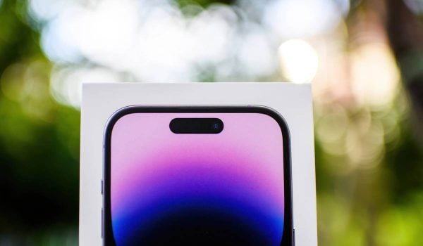

Apple prépare une fonction pour distinguer les vraies photos des images générées par IA

L'intelligence artificielle continue de transformer en profondeur notre quotidien et l'économie. Cette annonce s'inscrit dans une dynamique où les grands acteurs accélèrent leurs investissements et leurs lancements.
Ce qu'il faut retenir
Alors que les images générées par IA deviennent de plus en plus difficiles à repérer, Apple prépare une nouvelle fonction pour réussir à les distinguer.
Baptisée Reference Image, elle permettra de confirmer qu’une photo a bien été prise par un iPhone.
Un nouveau mode Apple à activer pour authentifier les photos Après Suno qui va […]
Pourquoi c'est important
Cette information marque une nouvelle étape dans le développement de l'intelligence artificielle. Elle concerne directement les utilisateurs de technologies numériques et mérite d'être suivie de près dans les prochaines semaines. Apple prépare une fonction pour distinguer les vraies photos des images générées par IA est ainsi un signal à prendre en compte pour comprendre les évolutions du secteur.
En résumé
Retenez l'essentiel : Apple prépare une fonction pour distinguer les vraies photos des images générées par IA. Cette actualité a été rapportée par Siecle Digital. Nous continuerons de suivre ce sujet et de vous tenir informés des prochaines évolutions.
🛒 En lien avec cet article
Liens de partenariat Amazon : une commission peut être reversée, sans surcoût pour vous.
Source : Siecle Digital